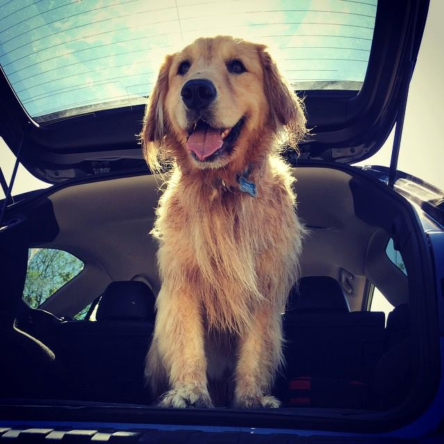
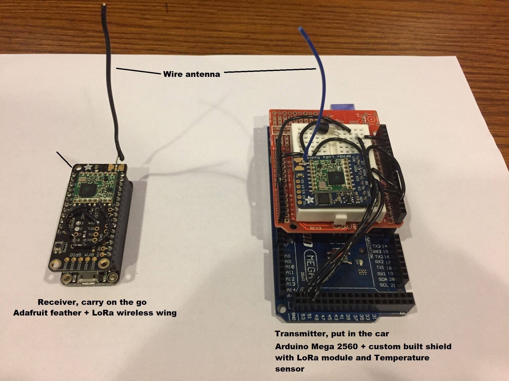
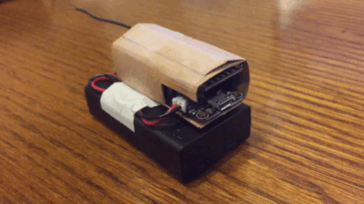
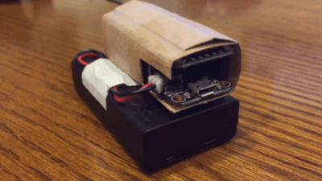
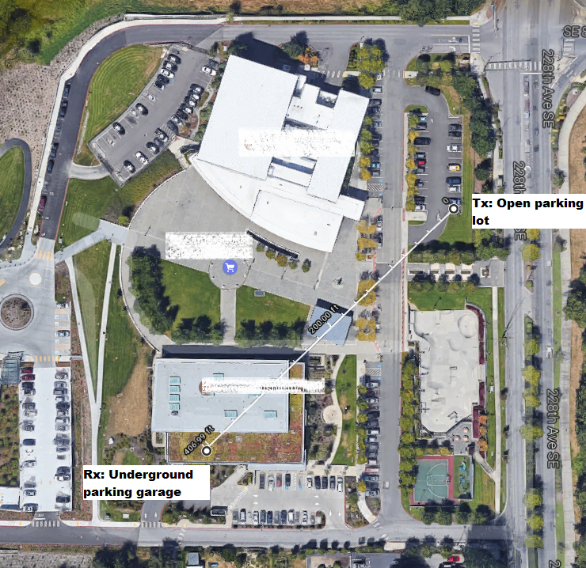
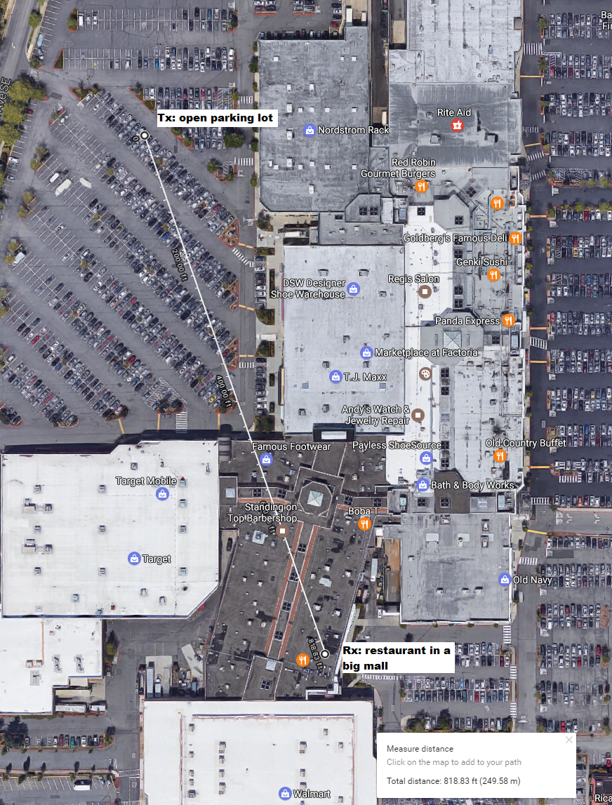
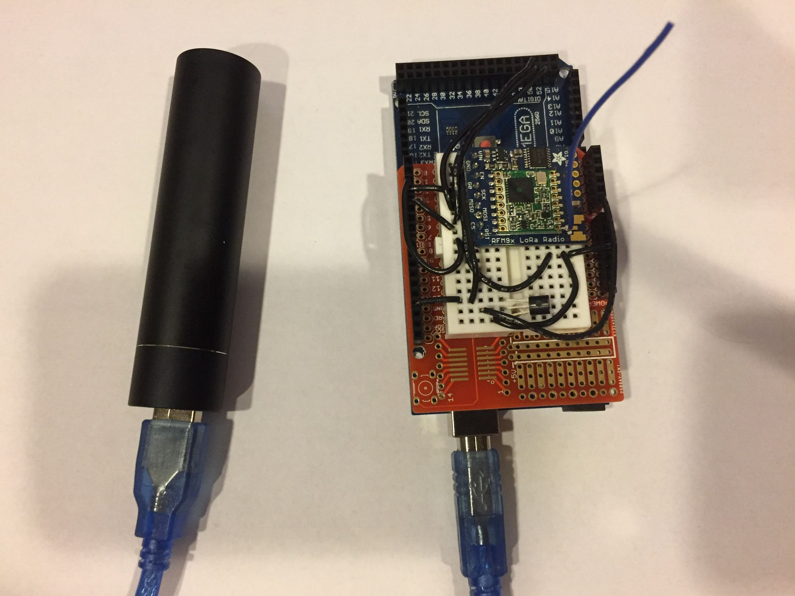
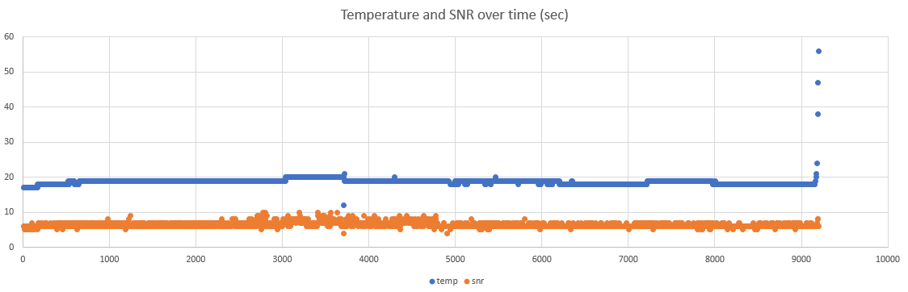
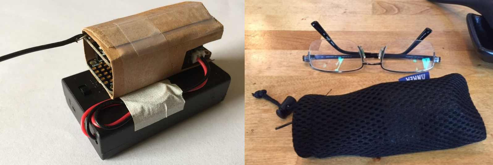

Making pets safer with Arduino
Contents
All source code and related information can be found on the project's github repo.
This is Max, a 6 year old Golden Retriever that I adopted when he was a little puppy. He and I both love outdoors and we have such a close binding that he'd beg me to take him whenever I'm going out. I try to take him to wherever I go as much as possible - going on a hike, paddle boarding on the water, shopping in the mall, etc. But the reality is, in an area as pet friendly as Seattle, there're a lot of places that don't welcome dogs, mostly the restaurants and the grocery stores.

If we go out for a day in urban area, he most likely will be staying in the car during lunch time. When it comes to pet safety, I'm a little paranoid as most pet owner would be. When leaving him in the car, I make sure to park in the shade, have the sunroof open, wind the windows down, etc. But no matter how much I do, when I sit in the restaurants I always worry about the temperature in the car.
Until one day I decided to do something about it - making a in-car, wireless real-time temperature monitor, which transmits periodic readings to the receiver that I carry with me. This gives me a piece of mind knowing that my pup is staying safely and comfortably in the car!
Disclaimer Please be responsible when leaving your pet in the car. Refer to the laws in different states that allows or prohibits leaving animal in motor vehicle in certain situations.
Before going into the details, here's what I built using several weekends and less than $100:

On the right is the transmitter. It stays in the car that sends the temperature readings every 5 seconds. On the left is the receiver, I take it when leaving my pup in the car. The receiver has a little LED that blinks a certain number of times to indicate the temperature in the car. Both devices run on battery and have a transmission range of around 250m (820ft) in very complex building environment (shopping mall), with primitive (poor man's) wire antenna.
High Level Design Decisions
The overall system design is based on LoRa wireless technology. It uses spread spectrum communication and has advanced technology to combat channel fading and interference. In ideal situation it's claimed to have miles of transmission range. Initially I was considering Family Radio Service (FRS) (used by walkie talkie) for its long communication range. But I couldn't find good hardware and software support for it. XBee seems to be a good alternative. With the "Pro" version, XBee claims to have miles of transmission range. But the cost of XBee Pro chips seem to be much higher than the Lora modules.
Basically I need a system to perform measuring, transmitting, receiving, and displaying the temperature data between 2 peers. I knew I should choose Arduino boards over RaspberryPi, because the tasks are simple and the power consumption must be low in order to make at least the receiver mobile.
I had no previous experience with Arduino programming and soldering circuits. My major was in wireless communication back in college and had college level knowledge on circuits. Programming was trivial as I'm already a programmer:) And this was a pretty fun experience!
Adafruit is an awesome website teaching how to do all sorts of Arduino things and also sells the devices. What I like most is on each product page it also offers the tutorial on how to assemble, wire, and program it! It made my first hardware project much smoother than I'd imagined.
Here's the list of things that I bought for this project.
| Item | Price | Description |
|---|---|---|
| Arduino Mega 2560 R3 (OSOYOO) | $13.99 | Transmitter board (awesome cheap "clone"1 board) |
| Adafruit RFM95W LoRa Radio Transceiver Breakout - 868 or 915 MHz | $19.95 | Transmitter communication module |
| TMP36 - Analog Temperature sensor - TMP36 | $1.5 | Transmitter temperature sensor |
| Anker PowerCore+ mini 3350mAh | $13.99 | Transmitter power supply (USB) |
| Adafruit Feather 32u4 Basic Proto | $19.95 | Receiver board |
| Adafruit LoRa Radio FeatherWing - RFM95W 900 MHz | $19.95 | Receiver communication module |
| 3 x AAA Battery Holder with On/Off Switch and 2-Pin JST | $1.95 | Receiver power supply (3 x AAA) |
Note that:
-
When buying LoRa modules, please make sure to buy the frequency according to the regulation of your country. In US, LoRa uses 915MHz.
-
The cost can be significantly cut down from this list. My choice of the products were not solely for cutting down the price, but more for better learning experience, community support, flexibility in prototyping. For example, Adafruit has feather board integrated with LoRa chip (or this). They are cheaper than buying the board and LoRa module separately. And it also eliminates almost all the soldering work.
The board and the LoRa module are wired together using SPI interface. I'm not going into the detail. Please refer to Adafruit tutorial.
Measuring the temperature
Using the TMP36 temperature sensor is extremely easy. It's done by using the MCU to measure the output voltage of the sensor. Most importantly, the input voltage to the sensor must be stable for the measurement to be accurate. Since I'll be using USB power on the transmitter side, and the USB power bank is stable at 5v, I don't have difficulty here.
For more information about using TMP36, refer to Adafruit TMP36 product page.
Displaying the temperature
You may have noticed that the receiver doesn't have a display. Yes - this was my first Arduino project and I didn't have time to learn and investigate everything at one shot. I decided to go simple and hacky. On every Arduino board, there is a tiny cute built-in LED that can be programmed (I guess they have it because almost every beginner's first project is to program the LED to blink). Using the built-in LED has two advantages - it's simple to program, and uses minimum power than almost any other fancier display.
I quantize the temperature into 7 regions, each have a different number of quick blinks every 5 seconds. So I can know the temperature region in the car by observing the number of quick blinks.
int temp_to_comfort(float tempC) {
if ( tempC < 0) return 7;
if ( 0 <= tempC && tempC < 20) return 1;
if (20 <= tempC && tempC < 25) return 2;
if (25 <= tempC && tempC < 30) return 3;
if (30 <= tempC && tempC < 35) return 4;
if (35 <= tempC && tempC < 40) return 5;
if (40 <= tempC) return 6;
}
I did took sometime tweaking the speed of each blink - initially it blinks a little too fast and I couldn't tell if it blinked 3 or 4 or more times. Once I slow it down a little, it works pleasantly well!
I took this idea further and made my little LED a generic information representation system. It can display all sorts of other information. For example, a long, slow blink indicates no data is being received - maybe the distance is too long, or the transmitter runs out of battery.
Below animation shows it's receiving temperature in the 20°C ~ 25°C range (2 blinks):

Below animation shows it's not receiving any data (1 long slow blink):

Communication System
RadioHead has awesome support for driving the LoRa modules. LoRa technology operates at the physical and MAC layer. Since I only need a peer to peer channel, I only used the physical layer functionality.
LoRa physical layer can be configured to use different frequency, bandwidth, spreading factor, channel coding rate. These all affect the data rate and communication range. Since I shoot for maximum transmission range, and that the amount of data needed to be transmitted is minimum, I chose to use the strongest error coding and slowest data rate: bandwidth = 125kHz, coding rate = 4/8, spreading factor = 4096chips/symbol, CRC on. For more detail on the LoRa technical information, refer to the LoRa Modem Designer's Guide.
With this setting, I've done a couple of real life range testing. And
overall I'm very satisfied. The testing are mostly done in urban
locations such as malls or grocery stores, either on flat or hilly
terrains. The transmitter (Tx) was put in the car. The receiver
(Rx) was carried with me. I programmed the receiver to send the
receiving signal-to-noise ratio (SNR) to the serial port, so by
attaching it to a computer and opening up the serial console, I can
know the exact level of channel fading and interference when the
signal is successfully received and decoded.
Range Test 1: Library Underground Garage
In library's underground parking, SNR dropped to -4dBm, but the signal was decoded reliably.

Range Test 2: Mall
This is the worst indoor channel I've tested so far in the Factoria mall. The transmitter is in the outdoor parking lot. The receiver is at almost the opposite side of the mall, 818ft away, across stores, walls, and who-knows-what. I didn't record the SNR as I didn't have laptop with me. I had to straiten the antenna in order to get the signal and the signal dropped occasionally.

Range Test Conclusion
I'm satisfied with the tests so far. What could be improved:
- Use proper antennas on transmitter and receiver
- Use stateful receiver - remember the last successfully received data and display it and the timestamp - it's acceptable as long as it can receive from time to time. This requires a fancier display for the data and the timestamp - I'd like to be aware of stale data.
Power Supply & Battery Life
Before this project, I didn't know how much there is in properly designing a power supply! There're so many choices and limitations.
On the transmitter side, since it's always in the car, I could choose to hook it up with my car's battery, as long as the input voltage is in acceptable range. Note that it only makes sense to have a constant power even if the ignition is not on. It could be done by tapping into an unused fuse in the car, by using something like this.
I chose a much easier option than that - since Arduino can be powered by USB power, I used a power bank. Note that typical power banks have "auto-cutoff" circuit that will cut off power after a certain period of time if the payload device only draws very low current. Fortunately, the transmission current is 200mA every 5 seconds. This is enough for the power bank to "stay awake". As a contrary, the receiver was cut off when powered by it. But I have a better option for the receiver, detailed later.

On the transmitter, I measured the power consumption using a multimeter:
- 90mA in non-transmission mode
- 215mA in transmission mode
For the 3350mAh power banks, the battery life is roughly:
3350 * 0.75 / ( 90 + 215/5 ) = 18.9h
In a real test, I got 14.5hours life time.
On the receiver side, power consumption measurements are:
- 0.03mA when idle
- 3.5mA when receiving
I power it with 3xAAA battery (4.5v voltage which is ideal for the feather 32u4 board). Estimated battery life:
3 * 1000 * 0.75 / ( 0.03 + 3.5/5 ) = 3082h = 128 days
Below is a chart of the temperature reading and receiver's Signal-to-Noise Ratio (SNR) over time. It is shown that temerature is well maintained constant over most of the battery life, but only raised up (due to low voltage) at the end of it. SNR is maintained over entire battery life and cut off when power is not sufficient.

Power optimization
The board (MCU) could be put to sleep when not transmitting to save power. This cuts the 90mA constant power draw. This could be done by using the MCU watchdog timer.
Device Enclosure
I was really concerned to bring this thing into crowded places. Looking at it from an ordinary person's perspective - a bare circuit board with some colorful wires and an antenna, taped to a black battery case! In such a person's eyes, it'd look exactly like what a remote control for some bomb in Hollywood movies would look like!
I didn't have time to learn designing and printing 3D printed cases. What I did instead, is to wrap it with thin card board and stuff it in the meshed bag that I got for the Anker power bank! The meshed fabric really helps because I can see the LED through the bag when it's lit.

Conclusion
I made a remote temperature monitor that really works. It gives me a piece of mind when having to leave my dog in the car, knowing that the temperature is comfortable and safe for him. There're many improvements that could be done. But it's the very first time I build circuits and program at such a low level. Soldering is really fun, but what's the most fun part? The moment when the LED blinked while the transmitter was some hundreds of feet away!
Links and Resources
- Vehicle Environment Monitor: Project site, source code etc.
- LoRa Technology
- LoRa modem technical information
- LoRa module wiring
- RadioHead LoRa library
- Using TMP36 temperature sensor
1: Arduino is open source hardware, "clone" is a good word here.